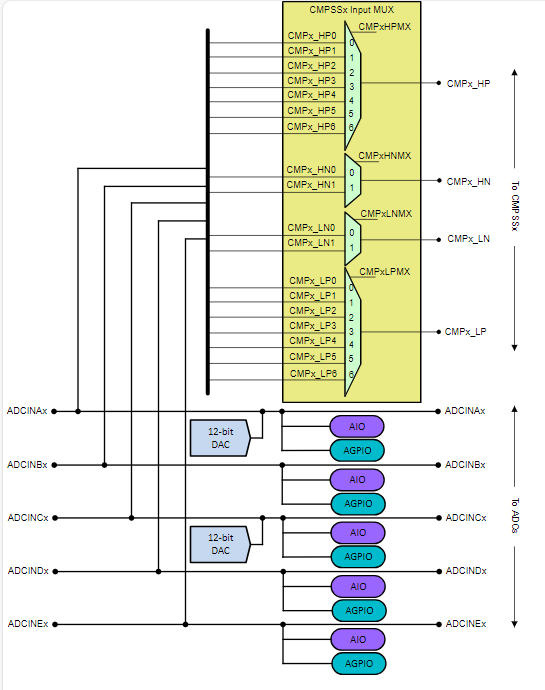

Analog Subsystem#
Overview#
In this module, you will:
Gain a basic understanding of how the analog subsystem integrates the ADC, CMPSS, and DAC modules within a device
The analog subsystem in C29x devices consists of Analog to Digital Converters (ADCs), Comparator Subsystem (CMPSS) and Digital to Analog Converters (DACs). These three modules are integrated to the analog subsystem through the analog interconnect which is an input bus that route external signals to the inputs of the ADCs, CMPSSs and output of the DACs. Below is an example Analog Subsystem overview from F29H85x:


Figure 1: F29H85x Analog Group Connections#
Introduction#
Sensing applications require signals to be converted to digital equivalent either as static DC or complex AC sinusoid waveforms through the ADC in order for the CPU to perform signal processing. The two of the 5 ADC blocks support 12 and 16-bit resolutions and the remaining three blocks on support 12-bit ADC. An ADC safety checker which automatically compares conversion results from multiple ADC modules for consistency is available on the ADC blocks. Sensed signals can be from analog inputs or can be from internal sources such as temperature sensors, internal DACs and ADC VREF.
The comparators in the CMPSS modules sense analog signals from the analog inputs and compare it against the independently programmable DACs or the built-in ramp generators. The CMPSS is typically used for threshold detection where its output is used to trigger further actions.
The general-purpose buffered DACs in the analog subsystem provide 12-bit resolution output. The DAC output is available in the analog interconnect.
Application of the Analog Subsystem#
The interconnect in the Analog Subsystem provides routing connections for analog input signals to the ADC and CMPSS modules. DAC output is also routed to the analog input interconnect. The Analog Subsystem provides all possible connection points for analog input signals and DAC outputs to ADC and. Main purpose of analog interconnect is to provide connection options for the analog input resources to be sensed simultaneously by the ADC or CMPSS of for the DAC output to be sensed by the ADC or CMPSS.
Test Your Knowledge!#
Question 1
Are the general purpose DAC outputs able to be sensed on any ADC input?
Answer
No. There are only specific channels where the general purpose DAC outputs are routed to. Refer to the analog pin connections table your device datasheet for the list of input channels that are connected to the DAC output.
Question 2
Can an analog signal both be sampled simultaneously with the ADC as well as the comparator sub system?
Answer
Yes. An analog signal sensed by any of the ADC inputs can be converted to a digital equivalent code by the ADC module and at the same time can be an input to the comparator sub system by configuring the corresponding comparator mux register for the signal to be high positive, high negative, low positive or low negative input of the comparator.